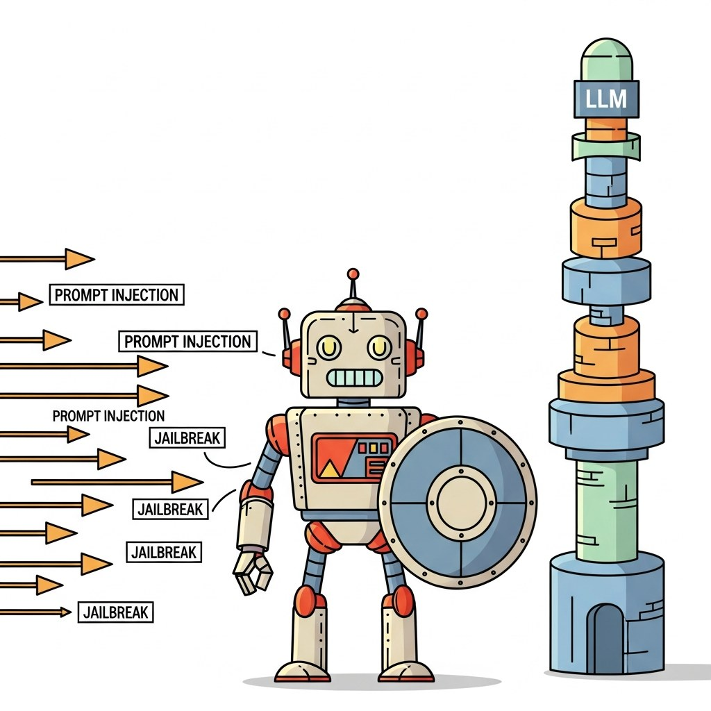

"A guardrail is the apology you wrote before the model misbehaved."
Guard, Defense-In-Depth AI Agent
Chapter 47 showed how attackers break models. This chapter is the defensive layer: input filters, output filters, classifier-based guardrails, content moderation, and the production rails (NeMo Guardrails, Llama Guard, Granite Guardian, OpenAI Moderation) that catch what the prompt could not.
Runtime content safety, output filtering, policy enforcement, and the difference between guardrails and alignment.
Chapter Overview
Guardrails are the runtime layer of LLM safety: the external checks that sit around a model and intercept inputs, outputs, and intermediate tool calls. This chapter walks the full guardrail stack from definition to deployment: what guardrails are (and are not), input guardrails (prompt-injection detection, PII pre-filtering), output guardrails (Llama Guard, NeMo Guardrails, ShieldGemma, Guardrails AI), policy DSLs and constrained decoding as safety primitives, and multimodal guardrails for image, audio, and video.
Guardrails are the difference between a research demo and a deployable system. By the end of this chapter you will know which guardrail to reach for, how to layer them, and how to avoid the false-confidence failure mode that single-guardrail deployments inherit.
- Explain the role of guardrails in the LLM safety stack and what they cannot replace.
- Apply input guardrails (prompt-injection detection, PII pre-filtering) at the request layer.
- Compare Llama Guard, NeMo Guardrails, ShieldGemma, and Guardrails AI as output-guardrail engines.
- Use policy DSLs and constrained decoding to make unsafe output structurally impossible.
- Architect multimodal guardrails for image, audio, and video inputs and outputs.
- Diagnose false-positive and false-negative regressions in a guardrail deployment.
Prerequisites
- Adversarial attacks from Chapter 47
- Online observability from Chapter 44
- Familiarity with classifier deployment basics
Sections
- 48.1 What Guardrails Are (and What They Are Not) Guardrails are the runtime layer of LLM safety: external checks that sit around a model and intercept inputs, outputs, and intermediate tool calls. Intermediate
- 48.2 Input Guardrails: Prompt-Injection Detection and PII Pre-filtering The input layer is the first guardrail a request hits, and it's where defense is cheapest. Advanced
- 48.3 Output Guardrails: Llama Guard, NeMo Guardrails, ShieldGemma, Guardrails AI Output guardrails are the last line of defense before a model response reaches a user. Advanced
- 48.4 Policy DSLs and Constrained Decoding as Safety The safest output is one that cannot be unsafe by construction. Advanced
- 48.5 Multimodal Guardrails: Image, Audio, Video Content Filtering Multimodal LLMs (GPT-4o, Claude 3.7 Sonnet, Gemini 2.5) take images, audio, and video as inputs and can emit any combination as outputs. Advanced
What's Next?
Next: Chapter 49: Agent Safety & Autonomy. Guardrails close the input/output loop on a single LLM call. Chapter 49 extends the defense surface to tool-using agents: sandboxing untrusted code, permission scoping, multi-step trajectory monitoring, and the privilege-escalation patterns that emerge when an LLM can act in the world.